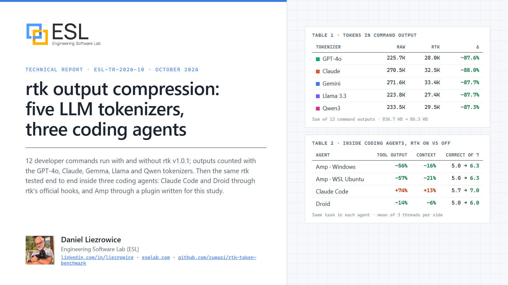
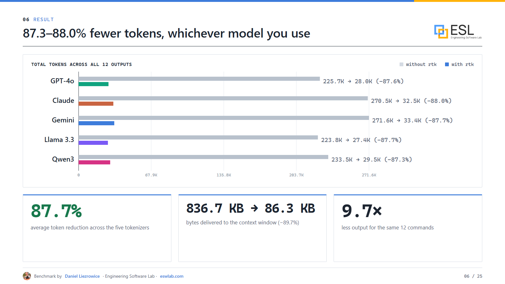
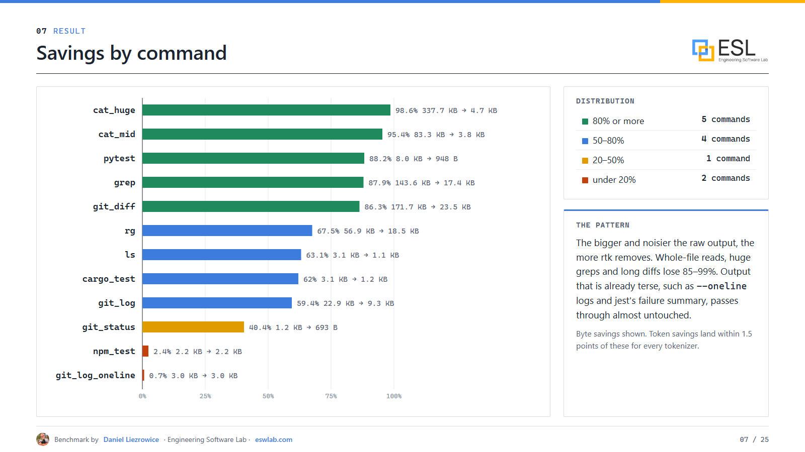
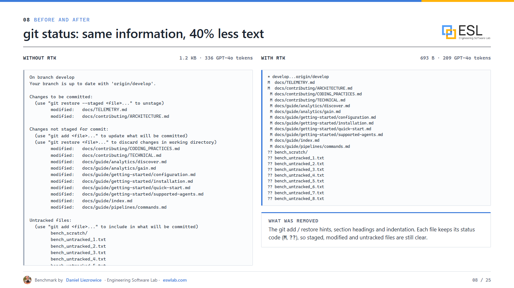
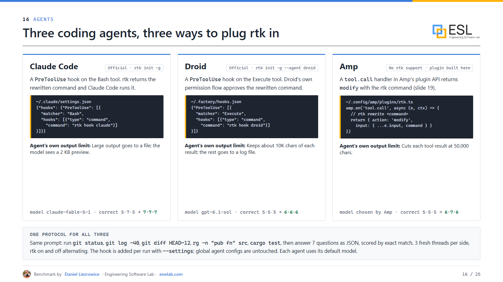
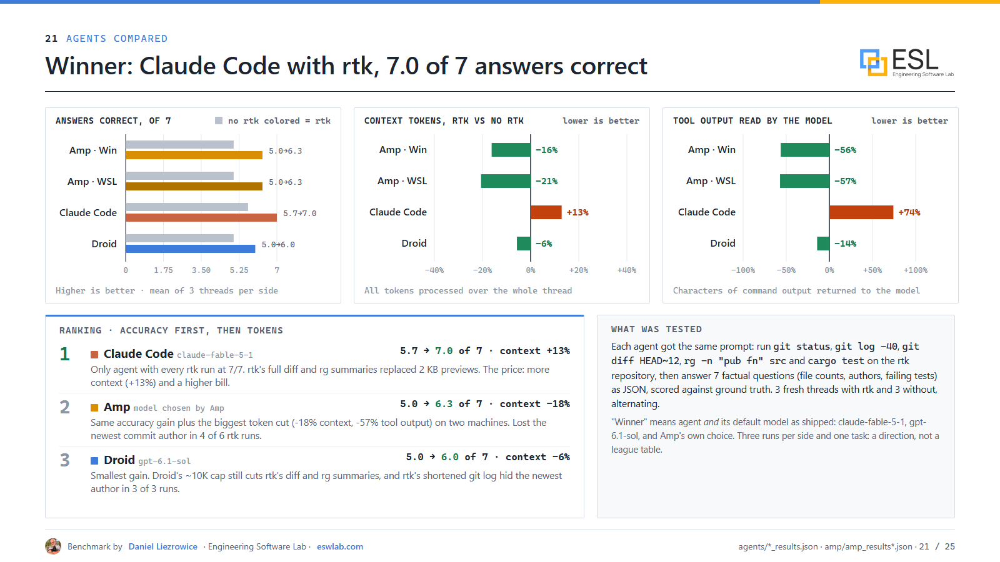
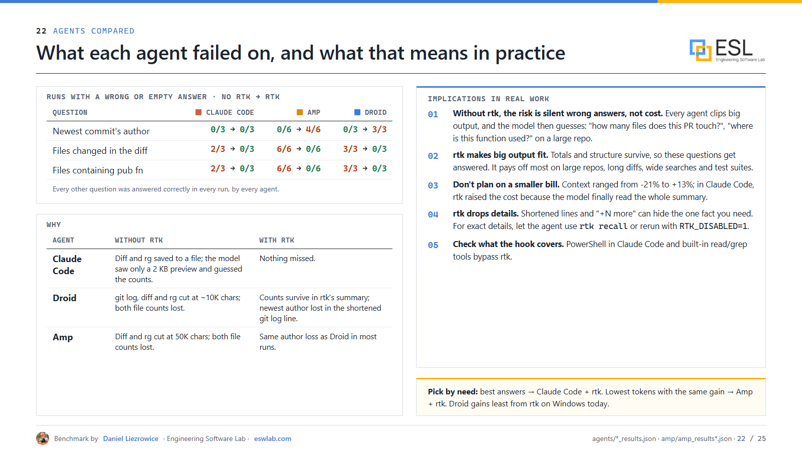

How rtk cut command output by 88% across five LLM tokenizers, and what happened when I put it inside Claude Code, Droid and Amp

Every coding agent I use spends a surprising share of its context window reading shell output: git status hints, passing tests, progress bars, the same file path repeated a thousand times in a grep. That output costs tokens, and it pushes out the things the model actually needs.
rtk (Rust Token Killer) promises to fix this. It is a small open-source CLI proxy: your agent's git status becomes rtk git status, the real command runs, and rtk filters, groups and truncates the output before the model sees it. The project claims 60–90% fewer tokens on common dev commands.
I wanted to know if that holds up, so I measured it. Everything is public:
Level 1, commands. I ran 12 everyday developer commands with and without rtk v1.0.1 on a Windows 11 workstation: git status, log and diff, ls, rg, grep, two large file reads, and pytest, cargo and jest suites with deliberate failures. I counted every output with five real tokenizers: GPT-4o (o200k), Claude, Gemma-3 (as a stand-in for Gemini), Llama 3.1 and Qwen3.
Level 2, agents. I gave three coding agents the same task: run five commands on the rtk repository, then answer seven factual questions (file counts, authors, failing tests) scored against ground truth. Each agent ran 3 fresh threads with rtk and 3 without:
PreToolUse hook
Across the 12 commands, rtk reduced the output from 836.7 KB to 86.3 KB. In tokens, the reduction was 87.3% to 88.0% for every tokenizer. The tokenizers disagree on absolute counts (Claude's and Gemma's split shell output about 20% finer than GPT-4o's), but the percentage saved is almost identical. The model you use does not change the conclusion.

The pattern is simple: the bigger and noisier the output, the more rtk removes. Large file reads lost 95–99%, grep 88%, a 170 KB diff 86%, pytest 88%. Output that is already compact, like git log --oneline or jest's failure summary, passes through almost unchanged. Exit codes matched on all 12 commands.

Two honest notes. rtk's own dashboard (rtk gain) reported 44.9% for the same runs, because it leaves out outputs larger than about 30,000 characters. And the overhead was tens of milliseconds per command, more than the "<10 ms" headline but invisible inside an agent step.

This is the part I did not expect. Every agent already protects itself from huge tool output: Claude Code saves big output to a file and shows the model a 2 KB preview, Droid keeps about 10,000 characters, and Amp cuts each result at 50,000 characters. Without rtk, the full diff and grep never reached the model, so every agent answered the file-count questions wrong or left them empty, in every run.
With rtk, the compressed summaries fit under those limits, and the answers came back.

| Agent | Correct answers (of 7), no rtk → rtk | Context tokens with rtk |
|---|---|---|
| Claude Code (claude-fable-5-1) | 5.7 → 7.0, every rtk run perfect | +13% |
| Amp (Windows + WSL) | 5.0 → 6.3 | −18% |
| Droid (gpt-6.1-sol) | 5.0 → 6.0 | −6% |
Claude Code with rtk was the clear winner on accuracy. Amp gained the same accuracy with the biggest token cut. Droid gained least, because its 10K limit still cuts some of rtk's summaries.
Note the Claude Code context column: rtk increased tokens there. Without rtk, the model only saw a 2 KB preview of the diff; with rtk it read the real 23 KB summary. The extra tokens bought correct answers.

rtk is lossy. It shortens git log lines to about 120 characters, and in Amp and Droid that hid the newest commit's author, a question every agent answered correctly without rtk. pytest output named 10 of 12 failures and counted the other two.
What I take from this for day-to-day work:
rtk recall <id> or RTK_DISABLED=1.This is the best tool of its kind I have measured, but I measured rtk against no tool, not against other compressors. It was one workload, one machine type, three runs per side in the agents, each agent on its default model. Treat it as a direction, not a league table. The scripts are public so you can rerun it on your own repository.
Recent research points the same way: savings measured in tokens do not automatically become savings in cost or quality, so it is worth measuring end to end:
If you use a coding agent on real repositories, install rtk (rtk init -g, or the Amp plugin from my repo). Expect half to nine-tenths less command output, and expect better answers on big outputs more than a smaller invoice.
Links
Benchmark by Daniel Liezrowice, Engineering Software Lab (ESL), https://eswlab.com.
#AI #LLM #CodingAgents #ClaudeCode #DeveloperTools #TokenOptimization #OpenSource #SoftwareEngineering